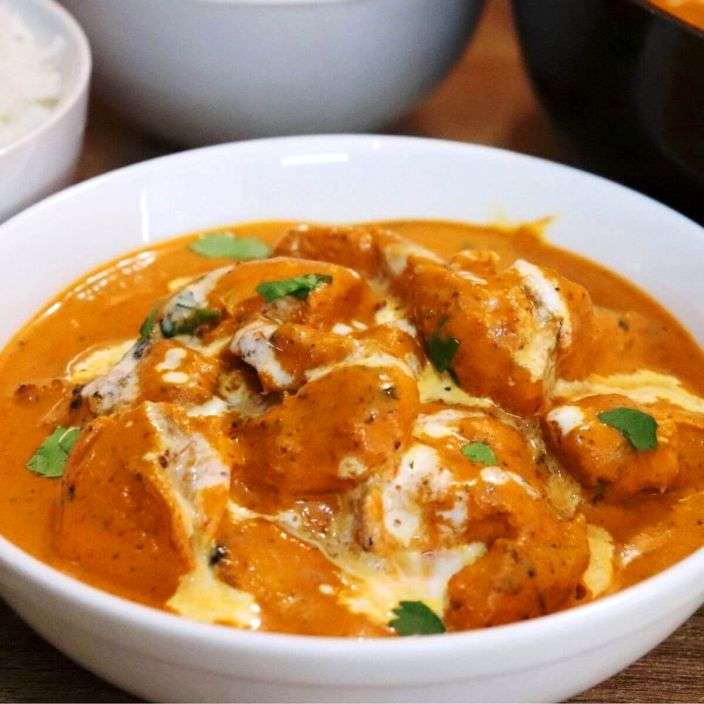

Butter Chicken Recipe

Description
Butter chicken is a classic Indian dish featuring tender, grilled chicken
pieces simmered in a rich,
velvety tomato sauce. The gravy is famously smooth and creamy, heavily enriched with butter,
cream, and a blend of aromatic spices like garam masala and Kashmiri chilli powder. Balanced with
a touch of sweetness and a distinct aroma of dried fenugreek leaves, it is a mild, comforting
favourite typically enjoyed with warm naan or basmati rice.
The dish was invented in the 1950s at the famous Moti Mahal restaurant in Delhi, India, by chefs
Kundan Lal Gujral and Kundan Lal Jaggi. It was created out of resourcefulness to prevent
leftover
tandoori chicken from drying out. By simmering the cooked chicken pieces in a luscious, buttery
tomato gravy, they inadvertently birthed a global culinary phenomenon.
Ingredients
- 1 cup butter, divided
- 1 onion, minced
- 1 tablespoon minced garlic
- 1 (15 ounce) can tomato sauce
- 3 cups heavy cream
- 2 teaspoons salt
- 1 teaspoon cayenne pepper
- 1 teaspoon garam masala
- 1 ½ pounds skinless, boneless chicken breast, cut into bite-sized chunks
- 2 tablespoons vegetable oil
- 2 tablespoons tandoori masala
Steps
- Gather all ingredients. Preheat the oven to 375 degrees F (190 degrees C).
- Melt 2 tablespoons butter in a skillet over medium heat. Stir in onion and garlic, and cook slowly until the
onion caramelizes to a dark brown, about 15 minutes.
- Meanwhile, combine cream, tomato sauce, remaining butter, salt, cayenne pepper, and garam masala in
a saucepan over medium-high heat; bring to a simmer.
- Reduce heat to medium-low, cover, and simmer, stirring occasionally, for 30 minutes. Stir in caramelized
onions.
- While the sauce is simmering, toss chicken with vegetable oil until coated. Season with tandoori
masala and spread out onto a baking sheet.
- Bake chicken in the preheated oven until no longer pink in the center, about 12 minutes.
- Add cooked chicken to the sauce and simmer for 5 minutes before serving.
And there you have a bowl of delicious butter chicken!
Next Recipe >
Return to Home